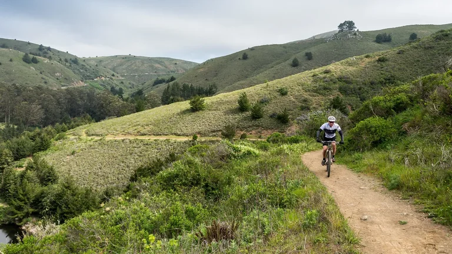

For much of the year, Sonoma County's creeks run low. Between December and late March, Sonoma County Tourism says, the rains bring its waterfalls back, and the best of them is a short drive from downtown Santa Rosa. Here is where to go, how far you will walk and what you will pay to park, using the parks' own published details.

Sonoma Creek Falls, Sugarloaf Ridge State Park
The closest waterfall to downtown is the 25-foot Sonoma Creek Falls in Sugarloaf Ridge State Park, which California State Parks places about 7 miles east of Santa Rosa, at 2605 Adobe Canyon Road in Kenwood. The falls flow after the winter rains, and most of the park's roughly 40 inches of rain a year fall between November and April. The park is run by the nonprofit Sonoma Ecology Center with Team Sugarloaf.
The park's waterfall map gives three ways in:
- Lower Canyon Trail: 0.45 miles round trip, with some stairs and a 40-foot elevation change. Park at the waterfall pullouts a quarter mile past the green gate at the park entrance.
- Canyon Trail: 0.8 miles round trip, with a 400-foot elevation change and about 100 steps, from the upper Canyon lot 300 yards before the entry kiosk.
- Pony Gate and Canyon loop: 2 miles round trip, with a 450-foot gain and more than 100 stairs. The park labels this its recommended route.
Parking and fees. The park operator lists day use at $10 per vehicle, or $8 for seniors 62 and older, students and current or retired military. The state parks page shows $8 and notes that rates can change, so check before you go. There is no free parking along Adobe Canyon Road, and the map asks drivers using the lower pullouts to buy a pass at the main park area first. The automated pay station across from the upper kiosk takes cash (no change) or cards, and the entry kiosk is staffed on weekends and most holidays.
Dogs are not allowed on the trails. If stairs are a problem, the park's 0.44-mile Creekside Nature Trail runs along the banks of Sonoma Creek on a compacted surface that is usable year-round. The waterfall routes all involve stairs.
Phillips Gulch Falls, Salt Point State Park
On the coast, Phillips Gulch Falls at Salt Point State Park drops about 15 feet. Sonoma County Tourism and Sonoma Magazine both point to the trail from the Stump Beach Cove parking lot on Highway 1 north of Jenner, a walk of a few hundred yards. Sonoma Magazine suggests going after a storm and at low tide. Salt Point lists day use at $10 per vehicle, or $9 for seniors, so bring payment even if you plan only a short stop. In winter, the park's information sheet says, gray whales pass along this stretch of coast, which makes it easy to build a full coastal day around the falls.
Pomo Canyon, Sonoma Coast State Park
For a longer hike, Sonoma County Tourism points to the creek waterfall near Pomo Canyon Campground in Sonoma Coast State Park, near Duncans Mills, which runs in the rainy season. It sits on the Pomo Canyon and Red Hill Trail, a 6.2-mile loop, so this one suits hikers with a free morning or afternoon.
Tips for waterfall season
- Time it after rain. These falls are seasonal and at their best when the water is high, so aim for a day or two after a good storm.
- Wear shoes with grip. The Sugarloaf routes all have stairs, and wet steps are slick.
- Check for closures. State park pages post current restrictions, and storms can close trails.
- Bring layers. Sugarloaf's winter highs run in the 50s and 60s, with lows in the 30s.
Good to know
- Best season: December to late March, after rain.
- Sonoma Creek Falls: 25 ft, Sugarloaf Ridge SP, 2605 Adobe Canyon Rd, Kenwood.
- Shortest route: Lower Canyon Trail, 0.45 mi round trip.
- Sugarloaf parking: $10 per vehicle ($8 seniors, students, military).
- Phillips Gulch Falls: about 15 ft, from the Stump Beach Cove lot at Salt Point.
- No dogs on Sugarloaf trails.
Make Santa Rosa your base
Sugarloaf is close enough for a morning walk to the falls and lunch back in town, and the coast is an easy day out. Hotel E is in a historic building on Old Courthouse Square, with continental breakfast before you set out, an evening happy hour when you return and valet parking. Art House Santa Rosa is also downtown, at 620 7th Street. If the rain is still falling, our guide to indoor things to do in Santa Rosa will fill the day.
Plan your stay downtown
Browse hotels, restaurants, wineries and attractions, all in one place.
Open the directory